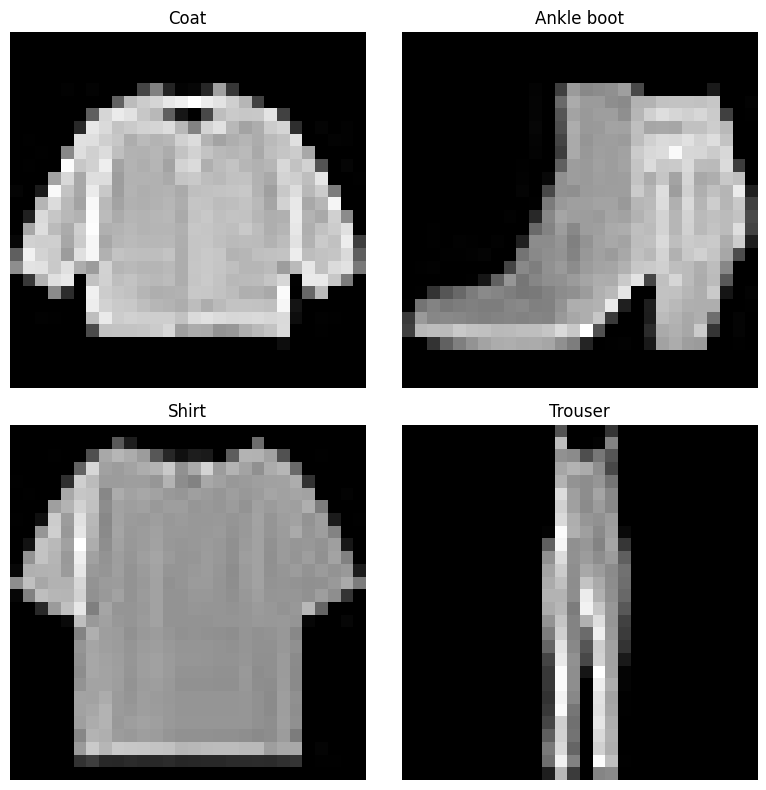

Generative Adversarial Networks in PyTorch with PyTorch Lightning
Python
ML
Deep Learning
PyTorch
GenAI
A Generative Adversarial Network (GAN) is implemented in PyTorch using PyTorch Lightning to generate greyscale 64 x 64 images of items of clothing. Several refinements have been made to improve the quality of the generated images, such as the inclusion of batch normalisation layers in the generator, leaky-ReLU activation in the hidden layers of the discriminator and tanh activation in the output of the generator.
Author
Daniel J Smith
Published
April 30, 2024
import torchimport torch.nn as nnimport torch.optim as optimimport torch.nn.functional as Fimport torchvisionimport torchvision.datasets as datasetsimport torchvision.transforms as transformsimport pytorch_lightning as plfrom torch.utils.data import DataLoader, random_splitfrom torchvision.datasets import FashionMNISTimport matplotlib.pyplot as plt%matplotlib inlineimport os from utils import*BATCH_SIZE =128NUM_WORKERS=int(os.cpu_count() /2)versions()
Generative Adversarial Networks (GANs) are a class of artificial intelligence algorithms used in unsupervised machine learning, implemented by a system of two neural networks contesting with each other in a zero-sum game framework. This technique was introduced by Ian Goodfellow and his colleagues in 2014 and has since been an active topic of research with applications including in generative image models, video generation, and voice generation systems.
GANs consist of two distinct models: a generator and a discriminator:
Generator: This network learns to generate plausible data. The generated instances become negative training samples for the discriminator.
Discriminator: This network learns to distinguish between real and fake data from the generator. The discriminator penalizes the generator for producing implausible results.
When training a GAN, the generator and discriminator are trained simultaneously:
Generator Learning: The generator improves its ability to create fake data by continuously attempting to deceive the discriminator. The optimal generator \(G\) minimizes
\[ \min_G \left[\log(1 - D(G(z))) \right]\]
where \(G(z)\) is the generator’s output when given noise \(z\), and \(D\) is the discriminator’s estimate of the probability that a sample came from the training data rather than the generator.
Discriminator Learning: The discriminator improves its ability to distinguish real data from fake data produced by the generator. The optimal discrimator \(D\) maximizes:
The training involves back-and-forth iterations where the discriminator guides the generator to produce more realistic outputs, and the generator forces the discriminator to become more skilled at distinguishing real data from fakes.
For a more comprehensive overview of GANs, refer to the original paper or additional resources on generative models:
PyTorch Lightning is a library built on top of PyTorch that abstracts complexity so that researchers and developers can build models faster and more efficiently. By structuring PyTorch code to be more modular and hardware-agnostic, Lightning enables scalability across different hardware setups without changing the model code.
PyTorch Lightning is designed for high flexibility and even higher performance, making it a popular choice for both academic researchers and industry practitioners.
For more detailed information on PyTorch Lightning, visit the official documentation:
To install PyTorch Lightning using the pip package manager run
pip install pytorch_lightning
at the command line.
Fashion-MNIST Dataset
Fashion-MNIST is a dataset of Zalando’s article images, designed as a more challenging replacement for the traditional MNIST dataset of handwritten digits. Each example in Fashion-MNIST is a 28x28 grayscale image, associated with a label from 10 classes.
Number of Samples: 70,000 (60,000 training and 10,000 test images)
Image Size: 28x28 pixels, grayscale
Number of Classes: 10
Each class corresponds to a type of clothing:
T-shirt/top
Trouser
Pullover
Dress
Coat
Sandal
Shirt
Sneaker
Bag
Ankle boot
Code
class FashionMNISTDataModule(pl.LightningDataModule):""" PyTorch Lightning Data Module for the FashionMNIST dataset. Handles the loading, downloading, and transforming of data into train, validation, and test splits. """def__init__(self, data_dir="./data", batch_size=32, num_workers=4):""" Initializes the data module. Args: data_dir (str): The directory to store/download the dataset. batch_size (int): Number of samples in each batch. num_workers (int): Number of subprocesses to use for data loading. """super().__init__()self.data_dir = data_dirself.batch_size = batch_sizeself.num_workers = num_workers# Define transformations that will be applied to each data sampleself.transform = transforms.Compose([ transforms.ToTensor(), # Convert images to PyTorch tensors transforms.Normalize((0.5,), (0.5,)), # Normalize grayscale images ])def prepare_data(self):""" Download the FashionMNIST dataset if not already available locally. This method is only called from a single GPU. """ FashionMNIST(self.data_dir, train=True, download=True) FashionMNIST(self.data_dir, train=False, download=True)def setup(self, stage=None):""" Set up the dataset for the 'fit' and 'test' stages. Args: stage (str, optional): Stage for which the setup is being run. If 'fit', set up for training and validation. If 'test', set up for testing. """if stage =="fit"or stage isNone: fashion_full = FashionMNIST(self.data_dir, train=True, transform=self.transform)# Randomly split the dataset into training and validation dataself.fashion_train, self.fashion_val = random_split(fashion_full, [55000, 5000])if stage =="test"or stage isNone:self.fashion_test = FashionMNIST(self.data_dir, train=False, transform=self.transform)def train_dataloader(self):""" Returns: DataLoader: DataLoader for the training data. """return DataLoader(self.fashion_train, batch_size=self.batch_size, num_workers=self.num_workers, persistent_workers=True)def val_dataloader(self):""" Returns: DataLoader: DataLoader for the validation data. """return DataLoader(self.fashion_val, batch_size=self.batch_size, num_workers=self.num_workers, persistent_workers=True)def test_dataloader(self):""" Returns: DataLoader: DataLoader for the test data. """return DataLoader(self.fashion_test, batch_size=self.batch_size, num_workers=self.num_workers)
show_img()

Generator Architecture
The Generator is designed to map latent space vectors to the data space. It consists of a series of layers that progressively upsample the input vector to a higher resolution, culminating in an image of the desired size.
Input: Receives a latent vector of dimensionality latent_dim.
Layers:
A fully connected layer expands the latent vector into a 7x7x64 tensor.
Two transposed convolutional layers (also known as deconvolutional layers) further upsample the tensor to larger spatial dimensions (14x14 and 28x28).
Two batch normalisation layers, one after each convolutional layer.
The final convolutional layer reduces the depth to produce a single-channel image, typically representing a grayscale image.
Code
class Generator(nn.Module):""" Generator class for a GAN, producing images from a latent space input. """def__init__(self, latent_dim):""" Initializes the Generator model. Args: latent_dim (int): Dimensionality of the latent space vector. """super().__init__()self.lin1 = nn.Linear(latent_dim, 7*7*64)self.ct1 = nn.ConvTranspose2d(64, 32, 4, stride=2)self.ct2 = nn.ConvTranspose2d(32, 16, 4, stride=2)self.conv = nn.Conv2d(16, 1, kernel_size=7)self.bn1 = nn.BatchNorm2d(64)self.bn2 = nn.BatchNorm2d(32)def forward(self, x):""" Forward pass through the Generator. Args: x (Tensor): Latent space input tensor. Returns: Tensor: Generated image tensor of shape [1, 28, 28]. """ x = F.relu(self.lin1(x)) x = x.view(-1, 64, 7, 7) x =self.bn1(x) x = F.relu(self.ct1(x)) x =self.bn2(x) x = F.relu(self.ct2(x)) x =self.conv(x)return torch.tanh(x)
Discriminator Architecture
The Discriminator evaluates images, distinguishing between samples drawn from the training data and those generated by the generator. It is structured as a conventional convolutional neural network (CNN), which downsamples the input image to a scalar output that estimates the probability of the input being a real image.
Input: Receives an image (real or generated).
Layers:
Two convolutional layers with kernel size 5 for feature extraction, each followed by max pooling for spatial reduction.
Dropout layer after the second convolutional layer to prevent overfitting.
Two fully connected layers to output a probability score.
Code
class Discriminator(nn.Module):""" Discriminator class for a GAN, distinguishing generated images from real images. """def__init__(self):""" Initializes the Discriminator model. """super().__init__()self.conv1 = nn.Conv2d(1, 10, kernel_size=5)self.conv2 = nn.Conv2d(10, 20, kernel_size=5)self.conv2_drop = nn.Dropout2d()self.fc1 = nn.Linear(320, 50)self.fc2 = nn.Linear(50, 1)def forward(self, x):""" Forward pass through the Discriminator. Args: x (Tensor): Input image tensor. Returns: Tensor: Probability tensor indicating the likelihood of the input being real. """ x = F.leaky_relu(F.max_pool2d(self.conv1(x), 2), negative_slope=0.2) x = F.leaky_relu(F.max_pool2d(self.conv2_drop(self.conv2(x)), 2), negative_slope=0.2) x = x.view(-1, 320) # Flatten the output for the dense layer x = F.relu(self.fc1(x)) x = F.dropout(x, training=self.training) x =self.fc2(x)return torch.sigmoid(x)
Combining into GAN Class
Code
class GAN(pl.LightningModule):""" A GAN class inheriting from PyTorch Lightning Module for generating and discriminating images. """def__init__(self, latent_dim=100, lr=0.0002):""" Initializes the GAN model. Args: latent_dim (int): Dimensionality of the latent space. lr (float): Learning rate for the optimizer. """super().__init__()self.save_hyperparameters()self.automatic_optimization =Falseself.generator = Generator(latent_dim=self.hparams.latent_dim)self.discriminator = Discriminator()self.validation_z = torch.randn(6, self.hparams.latent_dim) # Validation noiseself.generator_losses = []self.discriminator_losses = []def forward(self, z):""" Forward pass through the generator to create images from noise. Args: z (Tensor): A batch of random noise vectors. Returns: Tensor: Generated images. """returnself.generator(z)def adversarial_loss(self, y_hat, y, is_real=True, is_discriminator=True, label_smoothing=0.1):""" Computes the binary cross-entropy loss for adversarial training with label smoothing if required. Args: y_hat (Tensor): Predicted probabilities. y (Tensor): True labels. Returns: Tensor: Loss value. """if is_discriminator and is_real: smoothed_labels = (1.0- label_smoothing) * yelse: smoothed_labels = yreturn F.binary_cross_entropy(y_hat, smoothed_labels)def training_step(self, batch, batch_idx):""" Training logic for one epoch's step. Args: batch: The output of your DataLoader. A tuple (images, labels) in this case. batch_idx (int): Integer displaying index of this batch. Returns: Dictionary: Training loss and log metrics. """ real_imgs, _ = batch d_loss =self._train_discriminator(real_imgs) g_loss =self._train_generator(real_imgs.size(0))self.generator_losses.append(g_loss.item())self.discriminator_losses.append(d_loss.item())self.log_dict({'g_loss': g_loss, 'd_loss': d_loss})return {'loss': d_loss, 'progress_bar': {'g_loss': g_loss, 'd_loss': d_loss}, 'log': {'g_loss': g_loss, 'd_loss': d_loss}}def plot_learning_curves(self): plt.figure(figsize=(10, 5)) plt.title("Generator and Discriminator Loss During Training") plt.plot(self.generator_losses, label="Generator Loss") plt.plot(self.discriminator_losses, label="Discriminator Loss") plt.xlabel("Training Steps") plt.ylabel("Loss") plt.legend() plt.grid(True) plt.show()def _train_generator(self, batch_size):""" Handles the training of the generator. Args: batch_size (int): The size of the batch. Returns: Tensor: Generator loss. """ z =self._generate_noise(batch_size) fake_imgs =self(z) y_hat =self.discriminator(fake_imgs) y = torch.ones(y_hat.shape, device=self.device) g_loss =self.adversarial_loss(y_hat, y)self.manual_backward(g_loss)self.optimizers()[0].step()self.optimizers()[0].zero_grad()return g_lossdef _train_discriminator(self, real_imgs):""" Handles the training of the discriminator. Args: real_imgs (Tensor): Real images from the dataset. Returns: Tensor: Discriminator loss. """# Train with real images y_hat_real =self.discriminator(real_imgs) y_real = torch.ones(y_hat_real.shape, device=self.device) real_loss =self.adversarial_loss(y_hat_real, y_real)# Train with fake images z =self._generate_noise(real_imgs.size(0)) fake_imgs =self(z).detach() y_hat_fake =self.discriminator(fake_imgs) y_fake = torch.zeros(y_hat_fake.shape, device=self.device) fake_loss =self.adversarial_loss(y_hat_fake, y_fake)# Average losses for the discriminator d_loss = (real_loss + fake_loss) /2self.manual_backward(d_loss)self.optimizers()[1].step()self.optimizers()[1].zero_grad()return d_lossdef validation_step(self, batch, batch_idx):# This is necessary if you have defined a validation dataloaderpassdef _generate_noise(self, batch_size):""" Generates a tensor of random noise. Args: batch_size (int): The size of the batch. Returns: Tensor: A batch of random noise vectors. """return torch.randn(batch_size, self.hparams.latent_dim, device=self.device)def configure_optimizers(self):""" Initializes and returns optimizers for generator and discriminator. Returns: List: List containing optimizers for generator and discriminator. """ lr =self.hparams.lr opt_g = torch.optim.Adam(self.generator.parameters(), lr=lr) opt_d = torch.optim.Adam(self.discriminator.parameters(), lr=lr)return [opt_g, opt_d], []def plot_imgs(self):""" Plots generated images to visualize progress using matplotlib. """ z =self.validation_z.to(self.generator.lin1.weight.device)with torch.no_grad(): # Ensures that gradients are not calculated in the forward pass sample_imgs =self(z).detach().cpu() # Detach and move to CPU to avoid RuntimeError sample_imgs = (sample_imgs +1) /2print(f'Epoch: {self.current_epoch}') fig = plt.figure(figsize=(10, 6))for i inrange(sample_imgs.size(0)): ax = fig.add_subplot(2, 3, i+1) ax.imshow(sample_imgs[i, 0, :, :], cmap='Greys_r') ax.axis('off') plt.show()
Training
During training, the generator and discriminator contest with each other:
The Generator aims to fool the discriminator by generating increasingly convincing images.
The Discriminator strives to accurately classify real and generated images.
The system is trained using a minimax game strategy, optimizing both networks concurrently to improve their accuracy and robustness. This adversarial setup helps improve the generative quality of the images as the training progresses.
The following code cell creates instances of the FashionMNISTDataModule and GAN classes and then trains the model on the training data, using the jupyter magic command %%time to track the time taken.